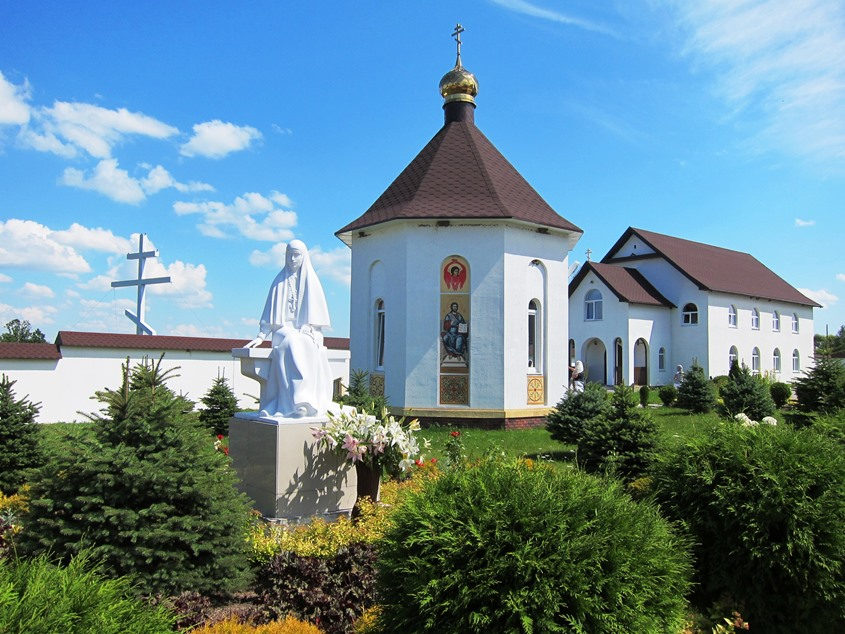
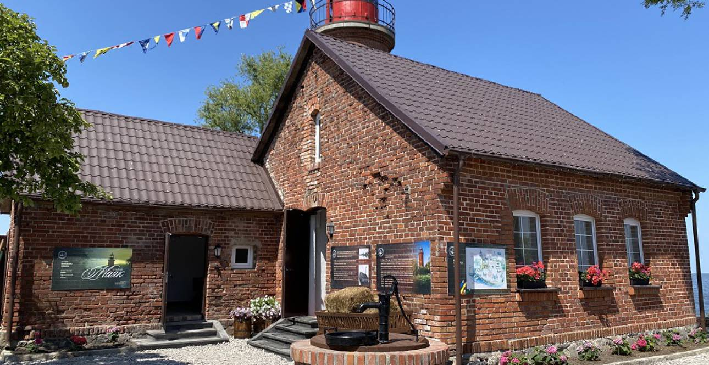
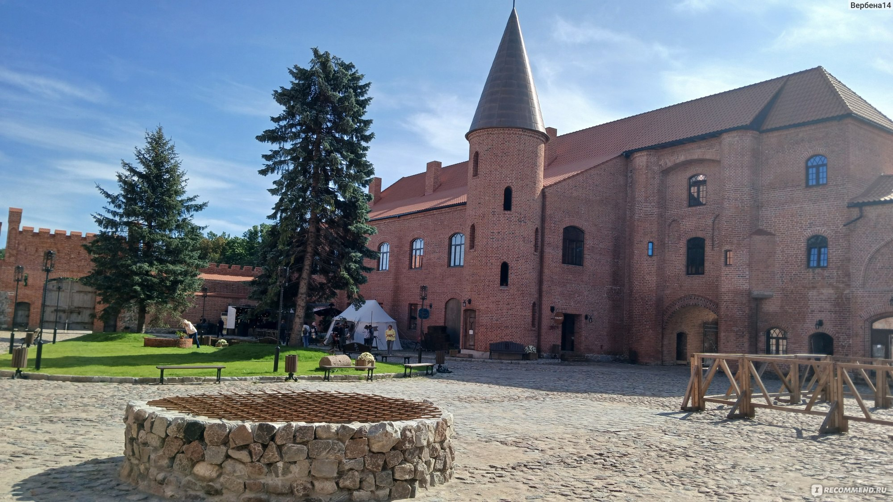
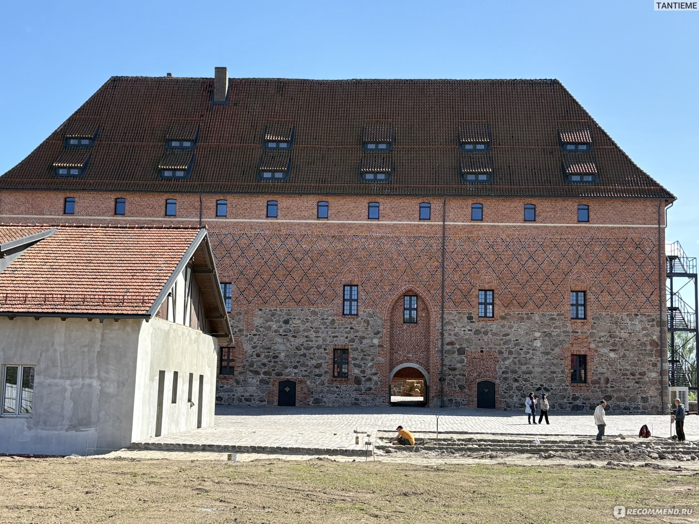
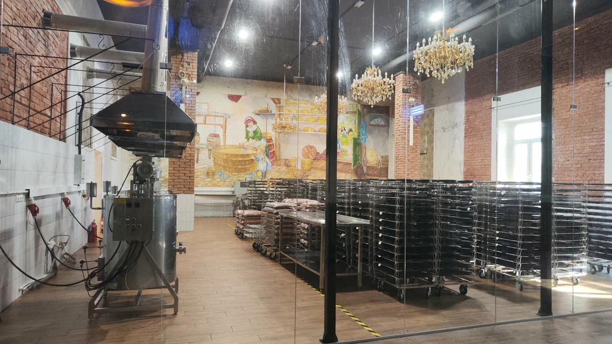

Описание путешествия
Маршрут для гурманов и любителей истории, который сочетает знакомство с достопримечательностями региона и дегустацию местных продуктов. Вы попробуете сыры, пиво и другие деликатесы, а также увидите старинные замки и монастыри.
Что вас ждёт:
- 🏰 Гурьевск (Нойхаузен): осмотр замка Нойхаузен, памятника средневековой архитектуры.
- 🏛️ Гвардейск (Тапиау): прогулка по историческому центру и осмотр замка Тапиау.
- 🍽️ Талпаки: обед в месте, известном своими традиционными блюдами.
- 🧀 Неман: посещение сыроварни, где производят местные сыры. Дегустация и возможность приобрести продукцию.
- 🌉 Советск: прогулка по городу и осмотр знаменитого моста Королевы Луизы.
- ⛪ Славск: посещение женского монастыря, места духовной тишины и красоты.
- 🍺 Полесск: экскурсия на пивоварню с дегустацией местного пива.
- 🗼 Маяк в Заливино: завершение путешествия у живописного маяка на берегу Куршского залива.
Время путешествия
от 8ч до 10ч
Фотографии маршрута






×